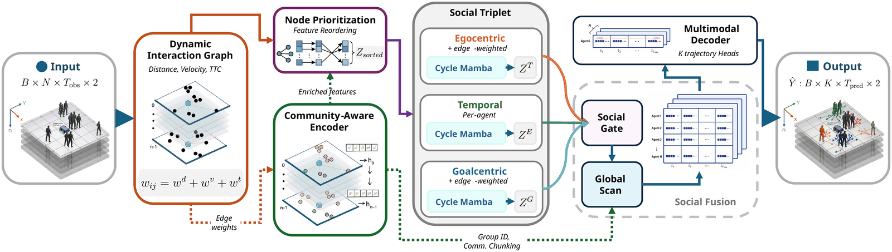
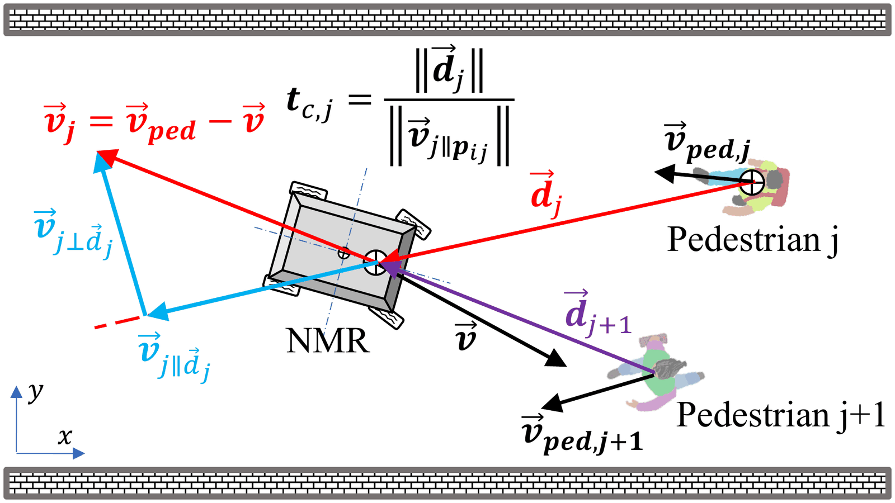
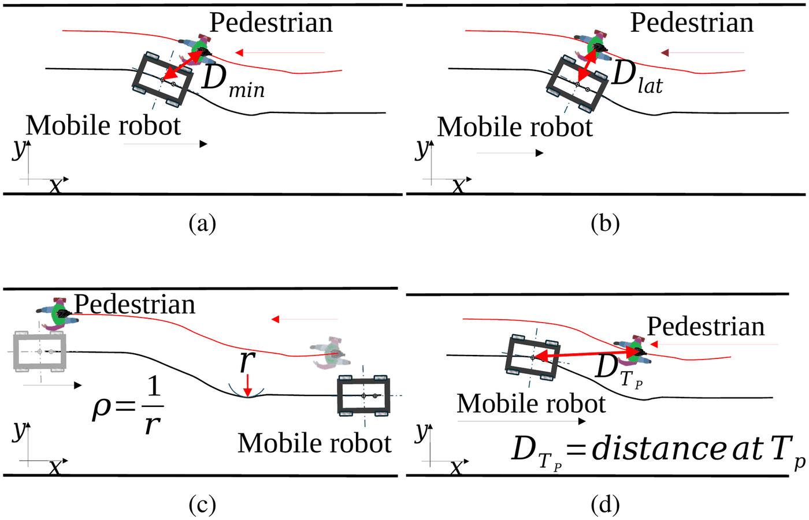
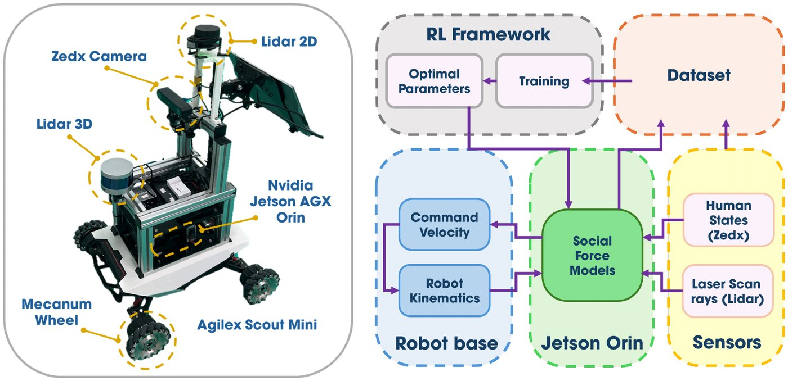
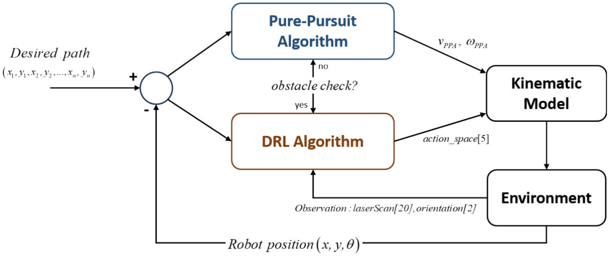
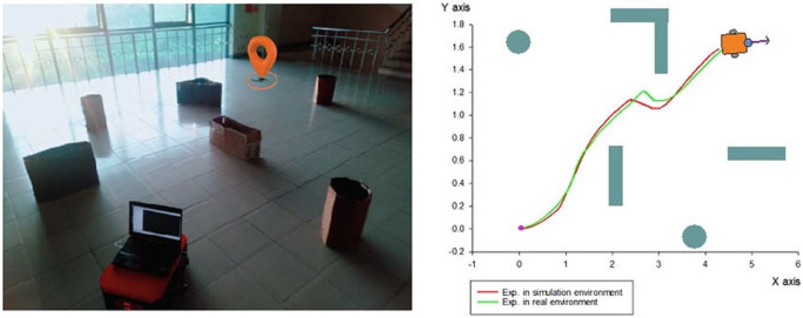

Publications
Author order follows each publication. See Google Scholar for citation counts and the complete record.
-

Social Graph Mamba: Forecasting Pedestrian Movements Based on Social Context
arXiv preprint arXiv:2608.21411, 2026
-

Stability and Comfort in Mobile Robot–Pedestrian Interactions
arXiv preprint arXiv:2607.17604, 2026
-

Empirical Prediction of Pedestrian Comfort in Mobile Robot–Pedestrian Encounters
IEEE International Conference on Robotics and Automation (ICRA), 2026
-

RL Optimization for Social Force Model in Human-Aware Navigation
International Automatic Control Conference (CACS), 2025
-

Combination of Deep Reinforcement Learning and Pure-Pursuit Algorithm for Adaptive Autonomous Mobile Robot Navigation
International Conference on Intelligent Systems and Networks (ICISN), Lecture Notes in Networks and Systems, vol. 1077, pp. 563–572, Springer, 2024
-

The Application of the Reinforcement Learning Method for Mobile Robot Navigation in an Unknown Environment
International Conference on Material, Machines and Methods for Sustainable Development (MMMS), Lecture Notes in Mechanical Engineering, pp. 201–207, Springer, 2024
-
Navigation for Mobile Robot in Unknown Environment using Reinforcement Learning Methods
Journal of Science and Technology, Hanoi University of Industry, vol. 59, no. 2B, 2023